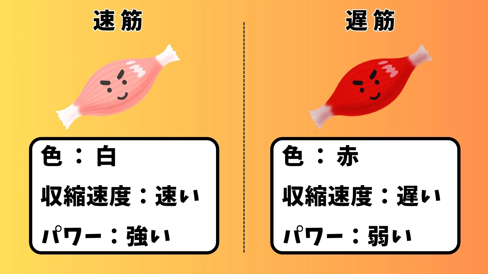

長距離走ばかりの練習はもうやめて！

サッカーのトレーニングで「走り込み」は昔から定番とされていますが、現代サッカーではその効果が見直されています。
特に長距離走ばかりの練習は、選手のパフォーマンスを低下させる可能性があるのをご存じでしょうか？
サッカーでは爆発的なスピードやそれを繰り返す能力が求められる場面が多いため、筋肉のつけ方やトレーニングの方法が重要です。
本記事では、長距離走中心の練習がもたらす影響や、速筋と遅筋の役割、そしてパフォーマンスを最大化するためのおすすめのメニューについて詳しく解説します。

目 次
1. よくある間違い：長距離走ばかりのトレーニング。
長距離走のメリットとデメリット。
＜メリット＞
① 心肺機能の向上
➡長距離走は、選手の心肺機能を強化するのに有効です。試合中に長時間走り続けられる体力をつけるために役立ちます。
② 基礎的な持久力の向上
➡試合を通して動き続けるためには、基礎的なスタミナが必要です。長距離走はそのベースを築くトレーニングとして有効です。
③ 精神的な強さの鍛錬
➡長い距離を走ることで忍耐力が養われ、選手が困難な状況にも耐える力を身につけられます。
＜デメリット＞
① 試合で求められる動きに合わない
➡サッカーでは急激なスプリントや方向転換、短距離の高速移動が頻繁に求められます。これらの動作は長距離走で鍛えられる遅筋ではなく、速筋が主に関与するため、試合の動きに直接役立ちません。
② 速筋の発達が遅れる可能性
➡長距離走を過度に行うと、速筋の発達が抑制されることがあります。これにより、スプリント能力や瞬発力が低下するリスクがあります。
③ 疲労蓄積によるパフォーマンス低下
➡長時間の走り込みは、選手に疲労を蓄積させ、回復時間が不足すると、試合や他のトレーニングでのパフォーマンスが下がることがあります。
2. 速筋と遅筋の基本知識。
速筋と遅筋という言葉は、これまでの記事の中でも触れてきましたが、サッカー選手のトレーニングにおいて非常に重要な要素です。
一見専門的で聞き慣れない言葉かもしれませんが、これらの筋肉の特徴を理解することで、より効果的なトレーニング方法を選ぶことができます。
このセクションでは、速筋と遅筋の違いをわかりやすく解説し、サッカーにおける最適な筋肉バランスについて考えていきます。
速筋と遅筋の違い。

＜速筋＞
・色：白っぽく見えるため「白筋」とも呼ばれます。酸素を使用する割合が少なく、エネルギーを糖分から主に供給します。
・収縮速度：速筋は短時間で強い力を発揮できる筋肉です。爆発的な動きや瞬発力を必要とする運動に適しています。
・疲労度：短時間で力を発揮しますが、持続性が低いため疲労しやすいです。
・得意な動き：ダッシュ、ジャンプ、シュートなど、瞬間的なパワーが必要な動き。
・鍛え方：短時間で高強度の負荷をかけるトレーニングが有効です。
＜遅筋＞
・色： 血液中のミオグロビンが多いため「赤筋」と呼ばれます。酸素を使ったエネルギー供給が得意です。
・収縮速度：遅筋はゆっくりとした動きで持久力に優れています。長時間にわたる動きを支えるのに適しています。
・疲労度：持続性が高く、長時間の運動にも耐えられます。
・得意な動き：長距離走、歩行、ジョギングなどの持久的な動き。
・鍛え方：長時間で低強度の負荷をかけるトレーニングが有効です。
サッカーにおける筋肉バランス。
理想のバランス
結論：
プレースタイルや部位によって異なり、自分のプレー課題によっても異なる。
＜プレースタイル別＞
・スプリントや瞬発力、シュートやジャンプを武器とする場合(※基本的に全選手が該当)
➡速筋がやや多い方が優位。
・長時間走り続けることを武器とする場合(※現代サッカーでは求められていない。)
➡遅筋も十分に必要。
＜部位別＞
①下半身(大腿四頭筋、ハムストリングス、ふくらはぎ)
➡速筋型
・理由：サッカーにおける下半身は、スプリントや瞬発的な動きに欠かせない部位です。特に、大腿四頭筋やハムストリングスは、ダッシュやキックの際に強力に働く筋肉です。これらの筋肉が速筋型であることで、瞬発的な力を発揮することができます。
②体幹(腹筋、背筋)
➡バランス型
・理由：体幹は、サッカーのプレー中に姿勢を保ち、バランスを取るために非常に重要です。腹筋や背筋は、特に動きが速く、強力でないといけませんが、持久的に使われることが多いため、速筋と遅筋がバランスよく鍛えられる必要があります。
③上半身(胸筋、三角筋、上腕二頭筋)
➡バランス型
・理由：サッカーにおいて上半身の筋肉は、適度な力強さを持ちながらも俊敏性を損なわないことが求められます。過剰に発達した上半身の筋肉は、身体全体のバランスを崩し、動きが鈍くなる原因となります。特に胸筋や上腕二頭筋が大きくなりすぎると、体重が増えすぎてしまい、スプリントや方向転換などの動作に悪影響を及ぼす可能性があります。
＜プレー課題別＞
「速いシュート、パスが蹴れない」
・課題部位：下半身（特に大腿四頭筋、ハムストリングス）
・原因：速筋の不足や筋力不足により、爆発的な動きができない。
➡・ダッシュ、ジャンプトレーニング
・ウェイトトレーニング
「スプリントや方向転換が遅い」
・課題部位：下半身（ふくらはぎ、ハムストリングス）、体幹（腹筋、背筋）
・原因：速筋の不足、体幹の弱さによる体重移動の遅さ。
➡・プライオメトリクストレーニング
・体幹トレーニング
「長時間プレーを続けるとバテてしまう」
・課題部位：全身
・原因：持久力を支える遅筋の不足、またはエネルギー効率が低い。
➡・インターバルトレーニング
・試合前に糖質を摂る。
普段の練習で速筋は発達する？
結論：
普段のトレーニングだけでもある程度、速筋は鍛えられるが、最大限の効果を得るには限界がある。
＜サッカーのトレーニングが速筋に与える影響＞
1．ダッシュやスプリント
サッカーでは頻繁にダッシュやスプリントを繰り返します。これらの動作は速筋を使うため、自然と速筋の発達に繋がります。
2．方向転換や急停止
瞬時の方向転換や急停止も速筋を刺激します。これらの動きでは筋肉が急激に収縮するため、速筋の活性化が促されます。
3．ジャンプ動作
ヘディングやシュート時のジャンプでは下半身の速筋が主に使われ、強化されます。
＜普段のトレーニングだけでは不十分な理由＞
1．負荷の限界
サッカーの練習では、速筋に十分な負荷を与える機会が少ないです。ウェイトトレーニングのように計画的に筋力を追い込む場面が少ないため、速筋の最大限の成長を引き出すことは難しいです。
2．持久力トレーニングの影響
サッカーの練習には、技術練習やポゼッション練習のような遅筋を中心に使う練習が多いです。このため、速筋への刺激が薄まる可能性があります。
3．筋繊維タイプの特性
速筋は強い負荷や短時間で高いパワーを要求される動きによって活性化します。そのため、適切な負荷がないと最大のポテンシャルを引き出せません。
3. 速筋を鍛えるおすすめメニュー。
プライオメトリクストレーニング
・説明/目的
筋肉の伸縮を素早く行うことで、爆発的な力を高めるトレーニングです。特にジャンプ力や加速力を向上させるために効果的で、速筋を主に刺激します。
・効果
・瞬発力向上：スプリントやジャンプなど、爆発的な力を発揮する能力を高めます。
・筋肉の反応速度向上：筋肉の収縮と弛緩を素早く切り替える力を養います。
・けが予防：関節や筋肉の安定性を高めることで、プレー中の怪我を防ぎます。
・トレーニング例
1. ボックスジャンプ：高さのあるボックスにジャンプで乗り、すぐに降りるのを繰り返す。
2. メディシンボールスラム：メディシンボールを頭上から床に向かって叩きつける。
3. 反復横跳びジャンプ：マーカーの間をジャンプで移動しながら横方向の爆発力を高める。
レペティショントレーニング
・説明/目的
ダッシュと完全休息を交互に繰り返すトレーニングです。完全に回復するまで休息を取ることで、正しいフォームと爆発的なスピードを身に着けます。
・効果
・スピードの向上：爆発的なスピードを身につけ、短距離スプリント能力を高める。
・フォームの改善：疲労が少ない状態で反復するため、正確なフォームを維持できる。
・速筋の刺激：短時間で最大出力を発揮する筋肉の活性化。
・トレーニング例
1. 100mスプリント：100m走り、完全に回復するまで休息（3分程度）。
2. 50mダッシュ＋方向転換：50m走り、ターンして50m走る。その後、完全に回復するまで休息（3分程度）。
3. 坂道スプリント：上り坂はダッシュで、下りながら休憩とする。
高強度インターバルトレーニング（HIIT）
・説明/目的
高強度で運動した後、不完全な休息または低強度の運動を挟むトレーニングです。レペティショントレーニングと違い、完全に回復するまで休息を取ることで、心肺機能の向上と筋力や持久力の向上を促します。
・効果
・心肺機能向上：試合中の持久力を高め、疲労耐性を強化。
・筋力と持久力の両立：速筋と遅筋をバランスよく刺激する。
・乳酸耐性向上：高強度の動きを続けられる能力を養成。
・トレーニング例
1. 20mシャトルラン：20mを往復し、30秒休憩。
2. バーピージャンプ：腕立て、ジャンプを交互に繰り返す。
3. マウンテンクライマー：両手を床につき、山を駆け上がるように脚を動かす。
ウェイトトレーニング
・説明/目的
特定の筋群に重量負荷をかけることで、効率よく筋力を高めるトレーニングです。足りないと思う筋肉に直接負荷をかけることで、最大筋力向上をもたらします。
・効果
・筋力向上：特定の筋肉に直接負荷をかけることで、最大筋力が増加。
・瞬発力の向上：パワーリフティング的動作により速筋が効率的に鍛えられる。
・バランス強化：体幹や補助筋を鍛えることで全身の安定性を向上。
・トレーニング例
1. スクワット：肩幅に脚を開き、股関節に体重が乗るように腰を落として上げる。
2. デッドリフト：肩幅に脚を開き、バーベルを膝上まで持ち上げ下ろす。
3. レッグプレス：座った状態でフットプレートに足を置き、押して引く。
4. まとめ。
- 長距離ばかリ走っていると遅筋（持久的）優位になり、速筋（爆発的）が減少する。
- 速筋を意識したトレーニングを行うことで爆発的な身体操作が可能になる。
このサイトでは、チーム練習と個人練習の2つに分けて、厳選された練習メニューをまとめています。
悪い意味での「伝統的な練習」への疑問。ただボールを蹴るだけの自主練。敗れる理由もわからない無策のチーム。
そんな悩みを解決するためにこのサイトを作り上げました。
蹴練場は日本全国のサッカーファミリーを応援しています。